Zakrnělá křídla
Vážení čtenáři,
s radostí vám představujeme přepracovanou verzi sbírky básní. Po čtyřech brožovaných vydáních vychází tato sbírka v nové knižní podobě, která byla poprvé vydána v roce 2024 jako 5. vydání.
Myšlenka na přepracování sbírky vznikla v létě 2022 s cílem dát jí atraktivnější podobu, jakou si bezpochyby zaslouží. Výsledkem je nová edice, která nabízí čtenářům hlubší a bohatší čtenářský zážitek.
Na konci roku 2025 byla tato nová verze znovu aktualizována a vydána jako II. vydání, které je zároveň již šestým vydáním sbírky celkově.
Věříme, že vás tato nová podoba sbírky potěší a osloví stejně, jako nás těšila její tvorba!
Text: Karel Lavor
Design, zpracování: Dan Lavor
Námět, ilustrace: Eleonora Šperlová
Odborný dohled, vazba, tisk: Grafické-papíry.cz
Poděkování
Pakliže jste doputovali až sem, věříme, že se Vám knížka líbila.
Jsme moc rádi a děkujeme za přízeň!
V případě, že byste chtěli přispět na výrobu knihy, můžete tak učinit malým příspěvkem zde:
1305987015/3030
v.s. 20102024
Kontakt
Pokud byste chtěli zanechat jakýkoliv vzkaz případně byste měli zájem získat další výtisk, například pro své přátele, napište nám na:
TakhleToBylo@ZakrnelaKridla.cz

Jezdecká
Do Kynšperka na motorce,
pojedu já k jedný holce.
Na motorce, na mopedu,
běda jestli nedojedu.
Dojedu-li tak jak mám,
štípanou jí pusu dám!
Čarodějná noc
Za poslední dubnové noci
přišla ta dívka za mnou,
že prej jsem v její moci
a oheň zápasil s tmou.
Já se smál.
Byla krásná jak květina v trávě,
co z poupěte rozvila list,
a v tom bylo to právě,
že nechtěl jsem z trávy ji vzít,
jako stín.
Tak řek jsem jí: lásko jseš mladá,
přivítej ještě pár jar,
až poznáš že život je touha,
zeptáš se proč jsem tě znal,
tolik dnů.
I když jsou voňavý dálky,
kde dny se táhnou jak dým,
na nádvoří barvy khaki,
chtěli mi zakázat smích,
i splín.
Tak utekly předlouhý roky,
já zapomněl snad že ji znám,
ale moje toulavý boty
mě dovedly zas domů k nám,
kde to znám.
Když v v kavárně u sklenky vína,
hledal jsem myšlenku svou,
přišla za mnou ta dívka
a oheň zas zápasil s tmou,
v srdci mém.
Kopec zasněžený
Lavor do lavoru sedá,
dolů kopcem uhání,
míjí lesík, míjí hřbitov,
zastavuje pod strání!